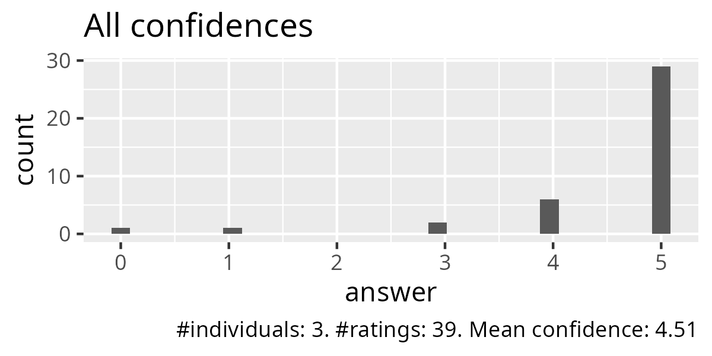
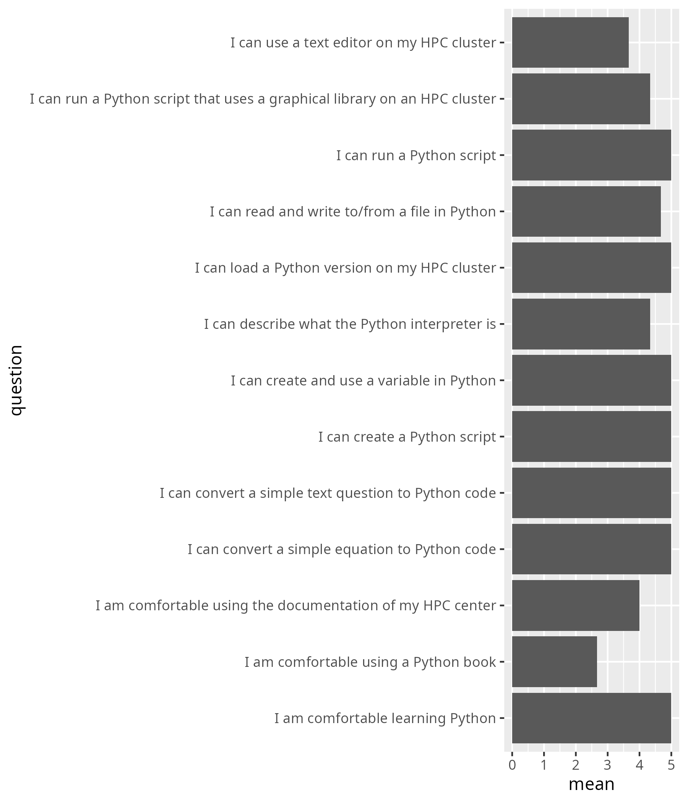
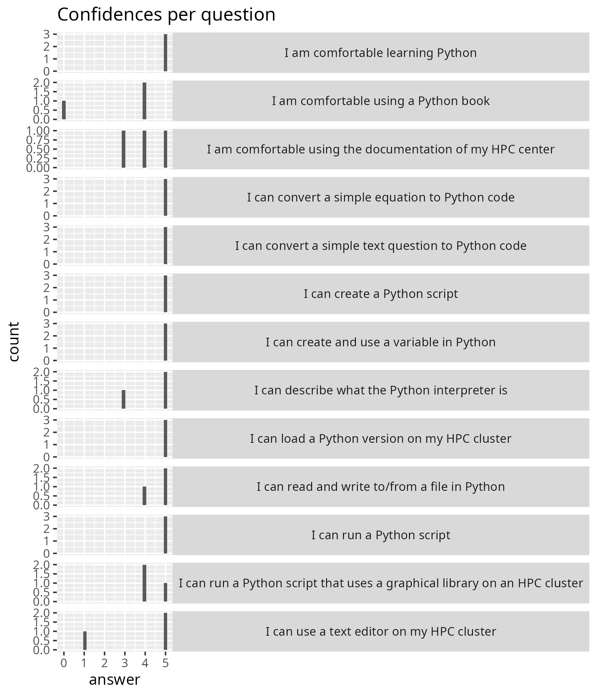
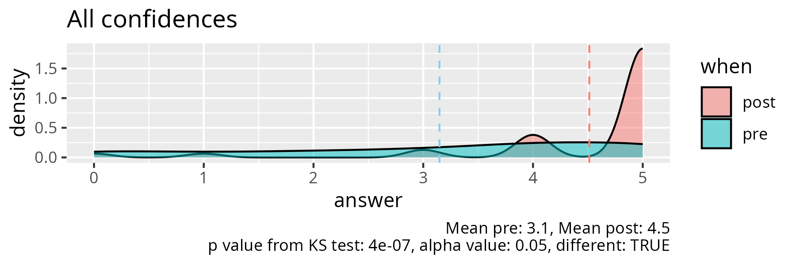
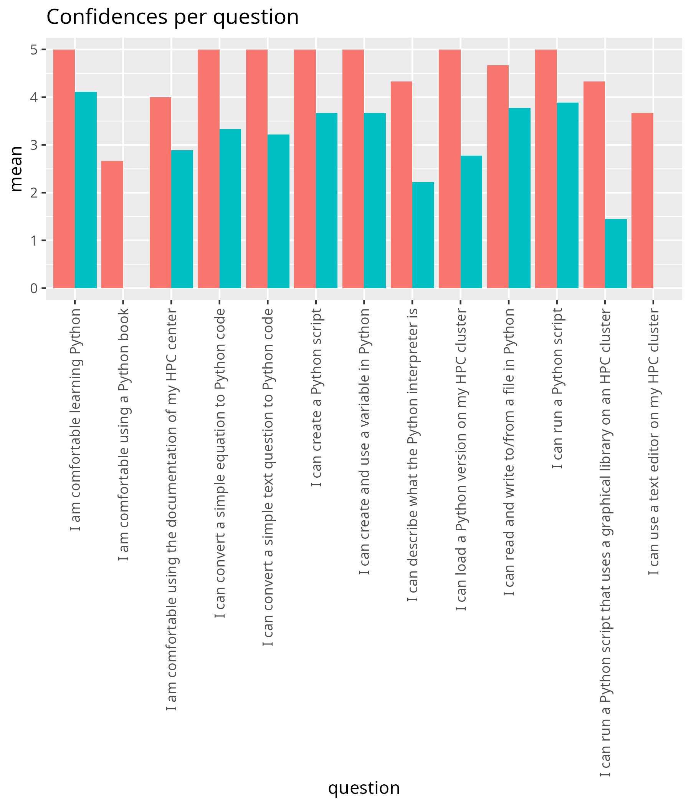
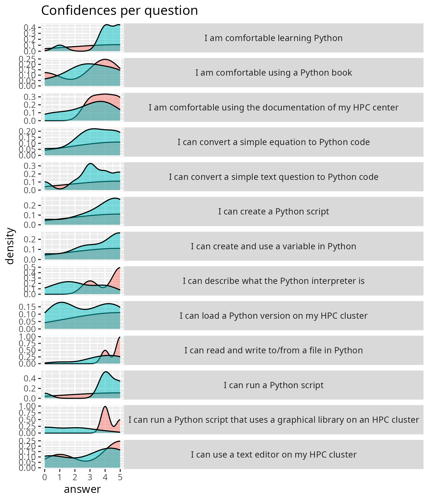

Reflection¶
- Date: 2025-11-27
- Part of the 4-day HPC Python course
- Number of active participants: 8
- Lesson plan
- Evaluation
- Reflection
Upon entering the Zoom room, I see that I am not a host. I asked my colleague to do so. Not a nice start... I do trust her I will be made host in time. On the other hand, I did prepare to move the learners to my personal Zoom room: this will be bad, but I do need those breakout rooms.
11:21¶
I enjoy how this day has unfolded: at the start there were 7 learners, of which only 2 learners are still in the course. The other 5 finished their exercises and left. I think only 1 or 2 will come back after lunch to do Python, as most either already know Python and 1 has 'just' done all the Python exercises of the afternoon!
11:24¶
All learners have left... time to prepare my teaching for tomorrow until 13:00. Let's see how many show up then :-)
I am happy how the morning went. What was new is that I allowed the learners to work either alone or in groups. 1 out of 7 picked to work alone, the remaining 6 I gradually and quickly put in breakout rooms.
I had enough time to talk to the learners. I encouraged them to share their screens, so that I did not need to ask 'Where are you (in the course material)?' all the time. Because of the screen sharing, I am sure all learners did all exercises: I've seen the Python interpreter, the Python scripts and the graphics.
One flaw was that I did not introduce my observer to the learners.
When all learners were in their rooms and I did a first round,
I had time to talk to her and discussed this. She apparently
had a question and helped out. She felt it was OK to help out
a bit and I trust her judgment. After the first break, I did introduce
her properly  . I enjoy(ed) having an observer around: let's see
what she has written down :-)
. I enjoy(ed) having an observer around: let's see
what she has written down :-)
At 11:37 a new learner came in. I brought her up to speed and this felt OK: she did not turn her camera on, because she was ill, and that was fine. She worked through the material in her own pace and she is already experienced enough for this to go fast.
Although I was quite stressed at the start, the day unfolded gently. The group of learners was a pleasure to work with!
13:15¶
At 13:00 there were zero learners, which I felt fine with. At 13:07, a learner showed up. I helped her with useful things and she left at 13:51.
15:24¶
I assume all evaluation results are in. I'll analyse them now.
Evaluation results¶
Feedback from learners:
- It's very nice to be able to through everything at your own pace, and still receive help/feedback on where you are, independent of the rest of the group.
- The instructor was so helpful and friendly and helped me a lot in learning new stuff and solving issues I had during the day
- Great teaching!
- Great work with creating engagement
This is all nice to hear. Too bad it does not help me improve :-)



Taking a look, the Python book was used by 2 out of 3 learners. This exceeds my observations: I have seen only 1 learner use it...
One person failed to use a text editor on his/her HPC cluster. I guess that this is the learner that could not log in...?




| question | mean_pre | mean_post | p_value | different |
|---|---|---|---|---|
| I am comfortable using the documentation of my HPC center | 2.888889 | 4.000000 | 0.3422436 | FALSE |
| I am comfortable using a Python book | 3.000000 | 2.666667 | 1.0000000 | FALSE |
| I am comfortable learning Python | 4.111111 | 5.000000 | 0.1400165 | FALSE |
| I can load a Python version on my HPC cluster | 2.777778 | 5.000000 | 0.0502103 | FALSE |
| I can describe what the Python interpreter is | 2.222222 | 4.333333 | 0.0598090 | FALSE |
| I can use a text editor on my HPC cluster | 2.875000 | 3.666667 | 0.3964871 | FALSE |
| I can create a Python script | 3.666667 | 5.000000 | 0.1480539 | FALSE |
| I can run a Python script | 3.888889 | 5.000000 | 0.0803306 | FALSE |
| I can run a Python script that uses a graphical library on an HPC cluster | 1.444444 | 4.333333 | 0.0218998 | TRUE |
| I can create and use a variable in Python | 3.666667 | 5.000000 | 0.2251043 | FALSE |
| I can convert a simple equation to Python code | 3.333333 | 5.000000 | 0.0908019 | FALSE |
| I can convert a simple text question to Python code | 3.222222 | 5.000000 | 0.0529253 | FALSE |
| I can read and write to/from a file in Python | 3.777778 | 4.666667 | 0.2814836 | FALSE |
Only 3 people filled in the survey at the end.
Do notice that the initial knowledge was high. This explains why we could all go home early.
Kudos to 'I can run a Python script that uses a graphical library on an HPC cluster' for being both new and being the only impactful learning outcome, regardless of the small sample size.
Conclusions so far: the new sessions did well, nothing needs to be changed.
Peer observation feedback¶
Peer observation feedback can be found at my teaching repository.